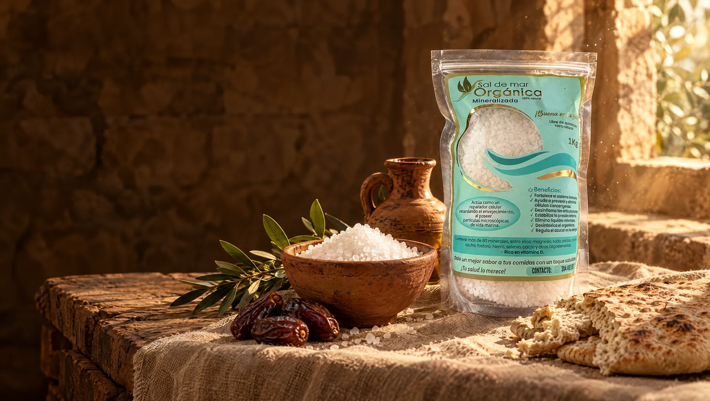
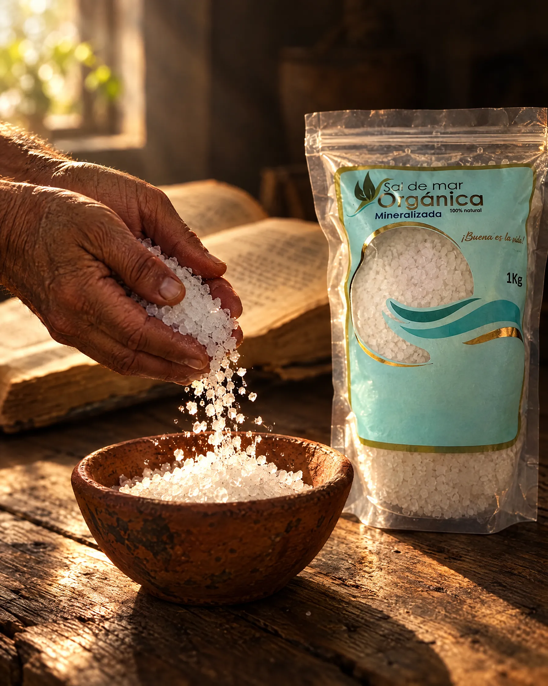
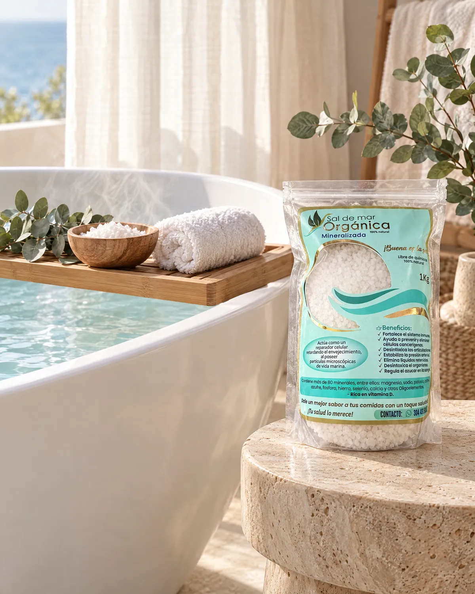
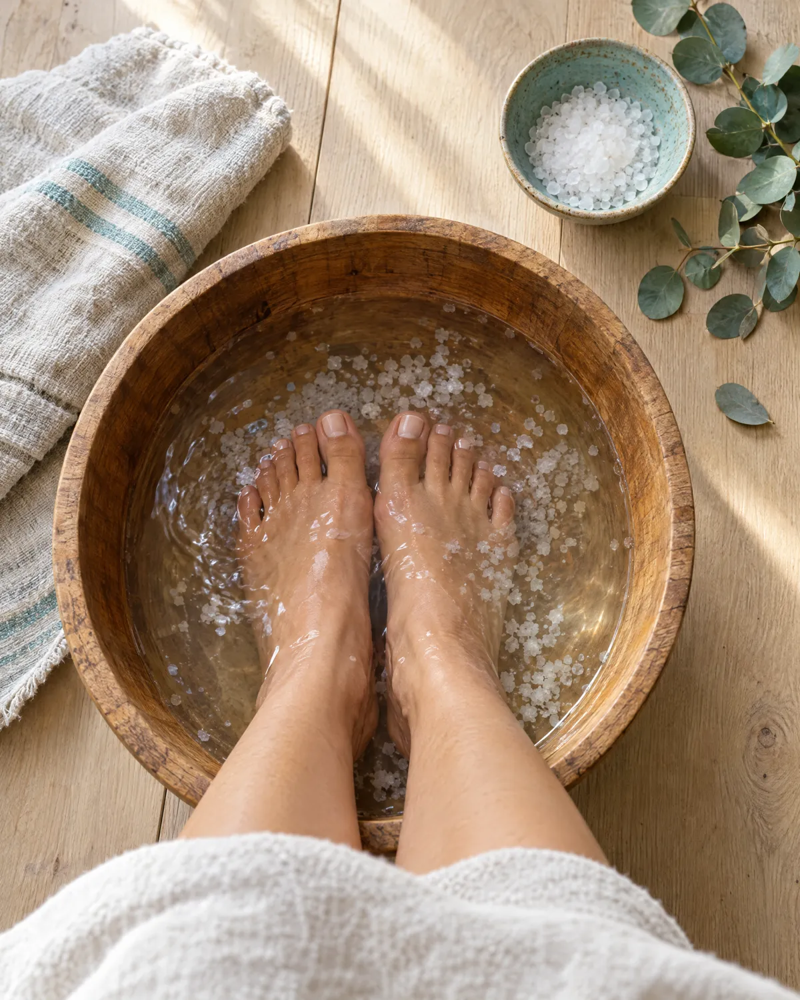
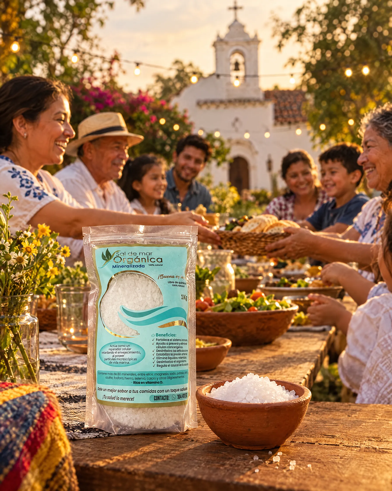

Pedidos para la congregación
Reúne los pedidos de los hermanos y recíbelos juntos, con precio especial por volumen.

Mateo 5:13
Una sal como la de los tiempos bíblicos: agua de mar, sol y viento. Sin refinar, sin químicos, sin procesos alterados por el hombre.
La sal aparece en la Biblia como símbolo de pureza, de alianza y de sabor. Por eso nuestro lema es el mismo de Jesús: ¡Buena es la sal!
«Vosotros sois la sal de la tierra.»
«Buena es la sal… Tened en vosotros mismos sal; y tened paz los unos con los otros.»
«Sea vuestra palabra siempre con gracia, sazonada con sal.»
«En toda ofrenda tuya ofrecerás sal.»
Versión Reina-Valera 1909.

En los tiempos bíblicos la sal se obtenía de la forma más sencilla: dejando que el sol y el viento evaporaran el agua del mar. No había refinerías, ni blanqueadores, ni antiaglomerantes.
Nuestra sal se hace igual. La empacamos tal como la entrega el mar, con sus minerales y su grano natural, sin pasar por los procesos industriales que dejan la sal de mesa común casi en solo cloruro de sodio.
Reúne los pedidos de los hermanos y recíbelos juntos, con precio especial por volumen.
Un detalle con mensaje para pastores, líderes, visitantes, bautizos y fechas especiales.
Para la cocina de los retiros, campamentos, almuerzos comunitarios y comedores de la iglesia.
La iglesia compra a precio especial y ofrece la sal en sus actividades para apoyar sus proyectos y misiones.


Desde los tiempos bíblicos el agua de mar y la sal acompañan el descanso del cuerpo. Lleva esa tradición a tu casa y compártela con tu congregación.
Disuelve la sal en la tina con agua tibia y sumérgete unos minutos. Ideal para descansar después de un día largo o de hacer ejercicio.
1 taza (≈ 250 g) · 15 a 20 minutosUna ponchera con agua tibia y sal para consentir tus pies cansados y sentir alivio al final de la jornada.
3 cucharadas · 10 a 15 minutosMezcla la sal con aceite de coco o de oliva y masajea suavemente la piel en la ducha. Deja una sensación suave y renovada.
2 cucharadas de sal + 1 de aceite · 1 vez por semanaUn remedio casero tradicional: disuelve una pizca en un vaso de agua tibia y haz gárgaras.
½ cucharadita en 1 vaso de agua tibiaUso externo y tradicional, como complemento de tu bienestar. No reemplaza tratamientos médicos. Evita aplicarla sobre heridas abiertas o piel irritada, y si tienes una condición de salud consulta a tu médico.

«Buena es la sal.»
Marcos 9:50
Lleva a tu congregación una sal pura, como la entrega el mar.